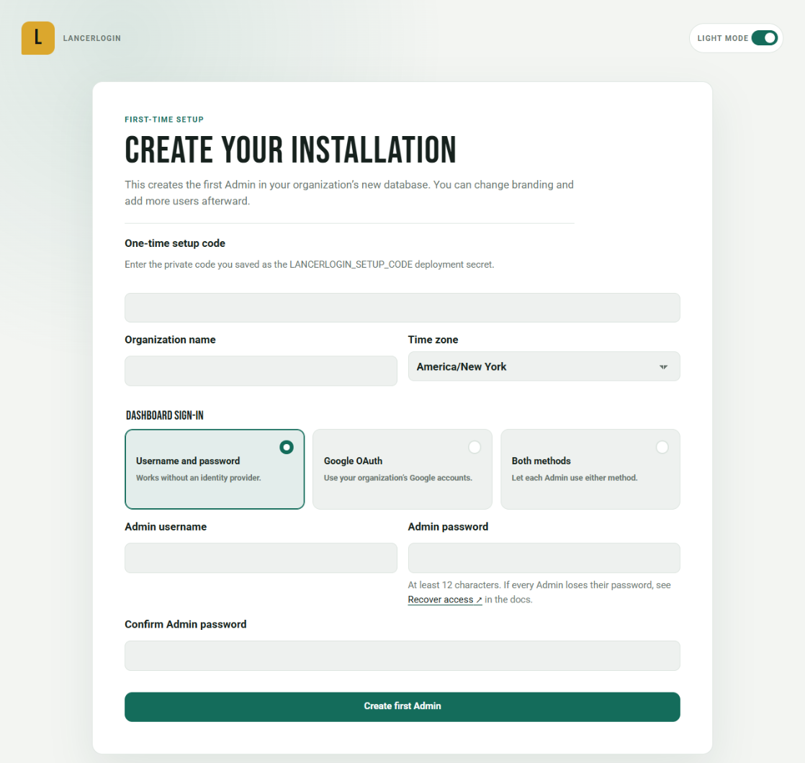
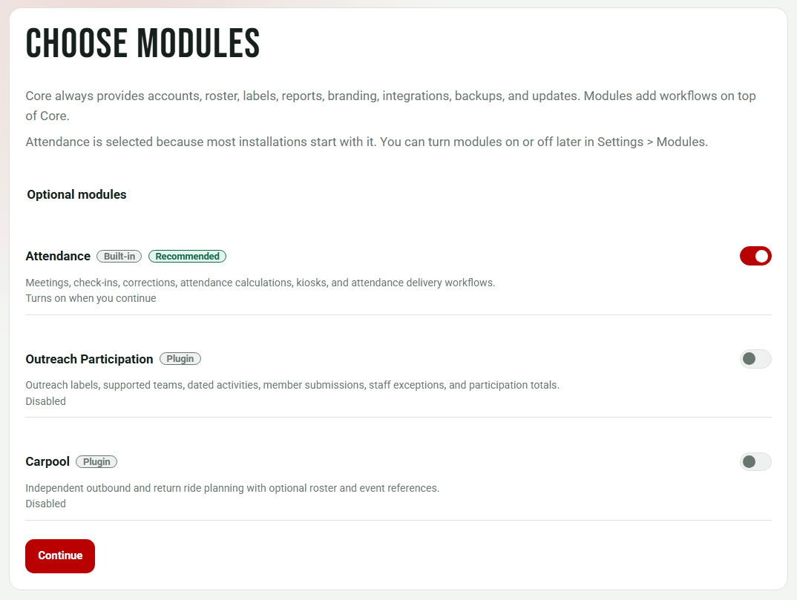
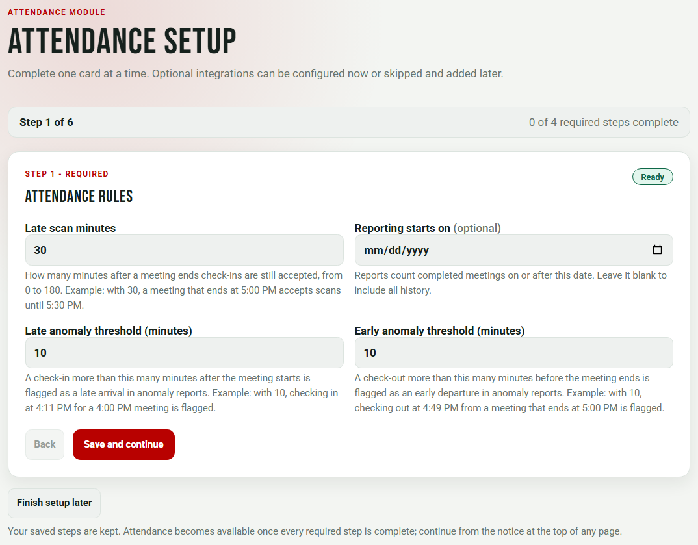
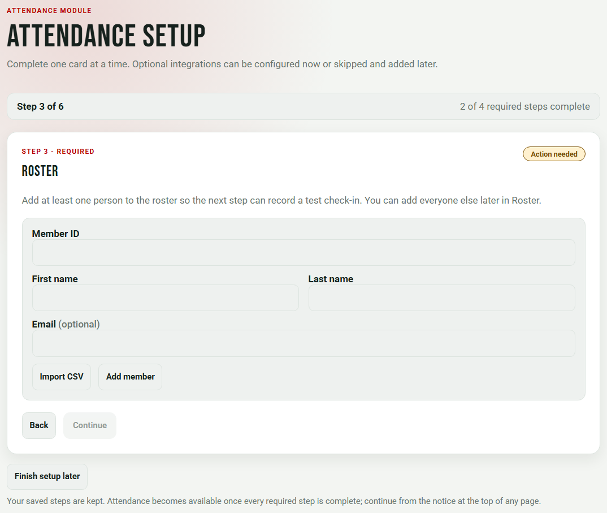
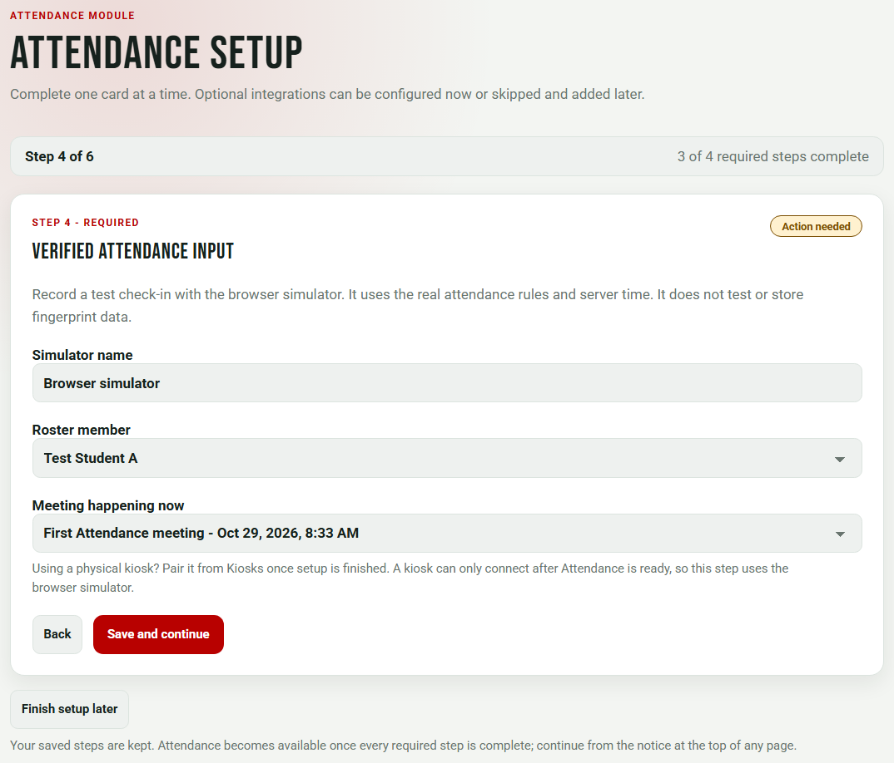
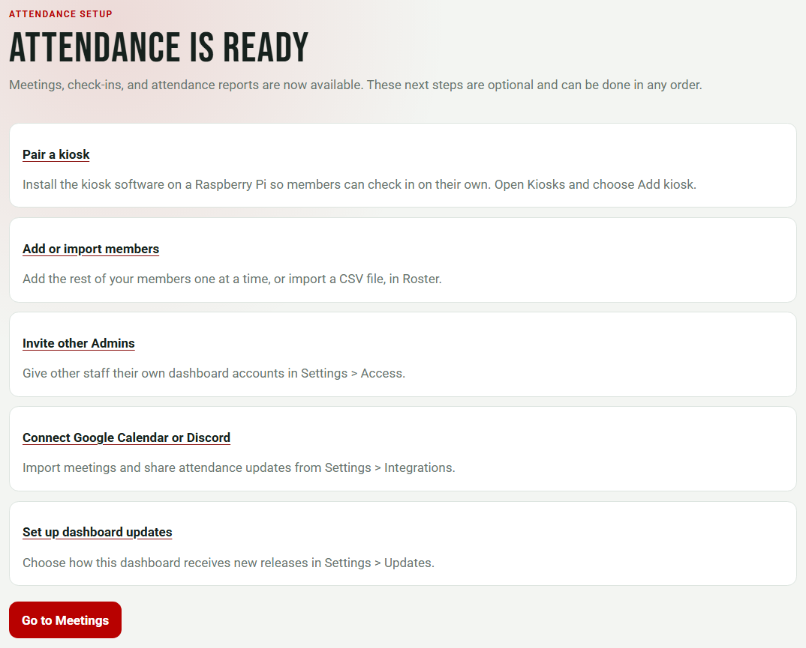

Open the dashboard link from the installation run summary. It has the form https://<slug>-dashboard.pages.dev. Keep your password manager open: you need the LANCERLOGIN_SETUP_CODE value you saved during installation.
1. Create your installation
A new installation opens the Create your installation form. Fill in each field:
| Field | What to enter |
|---|---|
| One-time setup code | The LANCERLOGIN_SETUP_CODE secret value, at least 16 characters. |
| Organization name | The name members see on the dashboard and kiosks. You can change it later. |
| Time zone | Choose your organization's time zone from the list. Meeting times, reports, and attendance windows use it. |
| Dashboard sign-in | Username and password, Google OAuth, or Both methods. Google needs a client ID and secret first; see Google sign-in. |
| Admin username, Admin password, and Confirm Admin password | For password sign-in. The password must be at least 12 characters. |

Select Create first Admin. LancerLogin creates the installation and, for password sign-in, signs you in as its first Admin straight away. After this, the setup code cannot create another Admin.
Setup code not accepted? Check for extra spaces from copying. To use a new code, update the LANCERLOGIN_SETUP_CODE secret and run the installation workflow again with operation resume and the same slug. This works only while no Admin exists.
2. Choose modules
Next, Choose modules lists the modules this installation includes. Core always provides accounts, roster, labels, reports, branding, integrations, backups, and updates; modules add workflows on top of Core. Each module is marked Built-in or Plugin, and Attendance is selected and marked Recommended.

- Keep Attendance on if you will take meeting attendance with kiosks. Most installations do.
- Turn on a plugin only when you are ready to set it up. You can turn modules on or off later in Settings › Modules.
- Turning a module off keeps its data for seven days before deleting it, so you can change your mind.
Select Continue.
3. Attendance setup
Attendance setup shows one card at a time, with progress such as "Step 1 of 6" and "0 of 4 required steps complete". Each card saves when you choose Save and continue. Finish setup later keeps the steps you saved; Attendance becomes available once every required step is complete.
- Attendance rules sets Late scan minutes (how long after a meeting ends check-ins are still accepted), Reporting starts on (optional; reports count meetings from this date), and the Late anomaly threshold (minutes) and Early anomaly threshold (minutes) that flag late arrivals and early departures. Member labels and attendance requirements can be added later.
- First meeting creates a test meeting that is happening now, so you can record a check-in in the next step.
- Roster adds at least one person. Enter Member ID, First name, Last name, and optionally Email, then choose Add member, or choose Import CSV. Choose Add another member for more. You can add everyone else later on Roster.
- Verified attendance input records a test check-in with the browser simulator for a roster member and the meeting happening now. It uses the real attendance rules and server time and does not test or store fingerprint data. A physical kiosk can connect only after Attendance is ready, so pair it from Kiosks once setup is finished.
- Calendar integration is marked Optional. Choose Open Integrations settings to connect Google Calendar, or Set up later and continue.
- Discord integration is also Optional, with the same two choices. See Discord member commands.



The browser simulator is a software check. Its check-ins are marked as simulated, and it does not test a fingerprint reader, a badge reader, or a Raspberry Pi.
4. Attendance is ready
After the last card, the completion screen says Attendance is ready and offers optional next steps: Pair a kiosk, Add or import members, Invite other Admins, Connect Google Calendar or Discord, and Set up dashboard updates. Choose Go to Meetings to start. The primary navigation now shows Meetings, Roster, Reports, Kiosks, and Settings, plus a page for each plugin you turned on.

To review the setup cards later, open Settings › Modules › Attendance › Attendance setup and choose Open Attendance setup. Reopening setup does not change existing meetings or attendance.
Next steps
- Add a physical kiosk for members to check in and out.
- Give other staff access in Settings › Access. See Roles.
- Set your logo, colors, and subtitle in Settings › Organization.
- Set up one-click updates if you did not add the update token during installation.
- Make sure a second person can recover access. See Recover access.